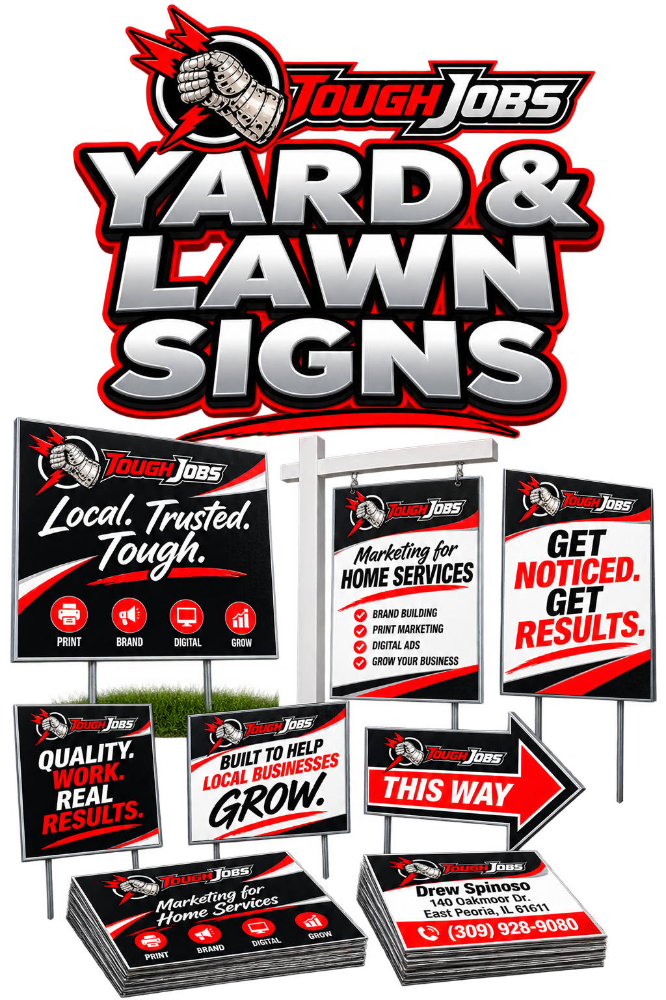

Yard & Lawn Signs
Every finished job becomes a free neighborhood billboard. Bold, readable from the road.
Yard and lawn signs are the cheapest, longest-running billboard a trades business can put to work. With permission, a sign left in a completed job's yard for the length of a project, or for a week or two after, puts your name in front of every neighbor, delivery driver, and passerby on that street for as long as it stands.
Toughjobs designs signs with a big logo, a big phone number, and one clear service — simple enough to read from a passing car, not a cluttered rundown of everything the business offers.
We produce every sign on double-sided corrugated plastic rated to survive a season outdoors, with H-stakes included, and we keep a design on file so a crew running low on signs during a busy season can get a reorder printed and shipped fast rather than running short at the worst possible time.

Yard & Lawn Signs that get you noticed.
Every job you finish is a chance to advertise to the whole street. A bold yard sign in a happy customer's yard is free neighborhood advertising that says a trusted pro worked here. Neighbors notice, and when they need the same work, they already have a name.
Why trades owners invest in yard & lawn signs.
Free neighborhood ads
One sign works an entire block. The best prospecting you'll never pay per lead for.
Social proof
A sign in the yard says a neighbor trusted you — the strongest endorsement there is.
Built to last
Weatherproof corrugated and metal options hold up through a full season outdoors.
Formats & finishes we offer.
- Corrugated plastic, aluminum, and coroplast
- Single or double-sided
- H-stakes and metal frames included
- Bold, road-readable design
- Bulk pricing for crews
Yard and Lawn Signs built around a specific job.
yard signs for contractors should not begin with a generic layout. A printed piece earns its place when the situation is clear. For an active jobsite, completed project, open house, or neighborhood awareness push, start with the person who will see it, what that person already knows, and the next step that is reasonable in that setting. That keeps the page from becoming a list of every service the company has ever offered.
Before design, Toughjobs documents permission, road speed, viewing distance, message length, placement, and retrieval plan. The first proof is checked as a working communication tool: Can the intended reader understand it in the available time? Is the main action obvious? Does every claim match what the business can actually deliver?
WHAT YARD & LAWN SIGNS ACTUALLY COST
Production begins only after the authorized contact approves the message and specifications. That approval covers size, corrugate weight, stakes, color contrast, phone or URL, quantity, and pickup timing. If a vendor or installer changes a requirement, the file is revised and approved again so the finished piece does not depend on an assumption hidden in an email thread.
| Piece / Package | Typical Investment | What You Get |
|---|---|---|
| Yard signs, design + 25 signs w/ stakes | $400 – $700 | Double-sided corrugated plastic, H-stakes, weatherproof |
| Yard signs, design + 50 signs w/ stakes | $650 – $1,100 | Volume pricing for full-crew coverage |
| Directional / arrow signs (10-pack) | $200 – $350 | For open houses, events, or job-site navigation |
| Reorder (existing design, 25 signs) | $180 – $320 | Print only, no design fee |
WHAT TO LOOK FOR IN A YARD & LAWN SIGNS PARTNER
- Uses double-sided corrugated plastic rated to survive a season outdoors
- Sizes text and logo to be readable from a passing car, not just up close
- Confirms local sign placement rules before a design goes to print
- Coordinates the sign’s look with your trucks, cards, and other print
- Keeps enough signs in stock so a crew is never short on a busy week
Toughjobs designs and produces yard and lawn signs for trade contractors across the Midwest. Talk to us about your job — no pitch, just a straight read on what would actually move the needle.
Yard & Lawn Signs FAQ
What should we provide for a yard and lawn signs quote?
Provide the intended use, approximate quantity, deadline, delivery location, available artwork, and any known production specifications. Important planning details include permission, road speed, viewing distance, message length, placement, and retrieval plan.
Does Toughjobs handle both design and production for yard and lawn signs?
The scope can include message planning, copy, design, proof preparation, and production coordination. The quote should state which services, materials, shipping, mailing, installation, or vendor costs are included.
What should be checked before the piece goes to production?
Review spelling, phone numbers, URLs, QR destinations, offer terms, and brand details. The production check should also confirm size, corrugate weight, stakes, color contrast, phone or URL, quantity, and pickup timing.
Ready for yard & lawn signs that look as good as your work?
We design it, print it, and get it in the right hands. Start with a free quote.